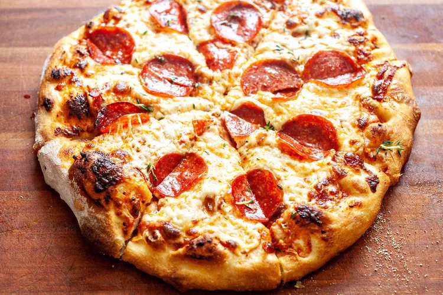

Description: Pepperoni Pizza
Pepperoni pizza is one of my favorite pizza's. The name implies the type of pizza with ingredients of it being pepperoni.
Ingredients
- 1. Dough (of your choice)
- 2. Robust tomatoe sauce.
- 3. Mozzarella cheese.
- 4. Peperroni slices.
Steps for cooking dish:
- Prepare your dough, toss or stretch the dought accordingly for size.
- Add robust tomato sauce and spread out evenly around the pie in a circular fashion typically works best.
- 2 cups of mozarella cheese, or more to your desired amount.
- Top it off with pepperoni pieces all around the pie making sure to now miss a spot.
- Pre-heat oven to 500F, once ready bake it for 10-15 minutes until golden brown crust or to your liking.